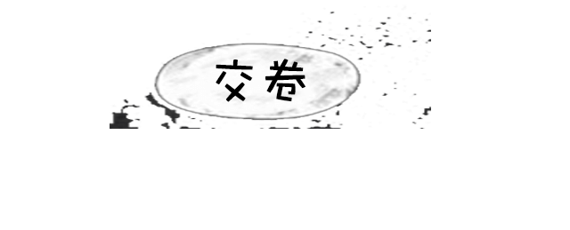

1.宝宝穿纸尿裤红PP应该怎么办？
A.立马更换纸尿裤品牌
B.清洁PP
C.清理PP，轻轻蘸干或晾干，擦上护臀霜，穿上纸尿裤并及时更换
D.清理PP，擦上护臀霜
2.母乳喂养的宝宝添加辅食的最佳时间为？
A.4个月
B.6个月
C.3个月
D.7个月
3.宝宝三天没有大便，以下处理方法错误的是？
A.用开塞露帮助宝宝排便
B.多喝水帮宝宝缓解上火症状
C.按摩宝宝肚子助消化
D.母乳喂养妈妈的调整饮食
4.母乳妈妈奶水不够，应该：
A.尝试古法下奶汤下奶食物
B.大量补充高蛋白质食品
C.放弃母乳喂养
D. 让宝宝多吸吮，清淡饮食
5.关于补钙以下说法错误的是：
A.宝宝出生2周后要及时补充鱼肝油
B.多晒太阳预防宝宝缺钙
C.纯母乳喂养的宝宝6个月前一般不需额外补充钙剂
D.宝宝出生后就要及时补钙
6.测试宝宝穿盖合适最有效的方法是？
A.摸宝宝手脚，冷热适中
B.看宝宝脸色，颜色红润
C.摸宝宝后脖子，温热无汗
D.以大人的穿盖为标准
7.关于奶粉冲调以下错误的说法是？
A.先放水，再放奶粉
B.水温控制在37度左右为最佳
C.米粉和奶粉最好不要混合冲调
D.用矿泉水冲调奶粉既安全，营养又高
8.宝宝食物中添加调味料最好在：
A.添加辅食之后
B.没有特别的规定
C.1岁以后
D.10个月后
9.清理宝宝鼻屎的方法有：
A.用温毛巾热敷宝宝鼻根处
B.在宝宝鼻孔处滴一点母乳
C.用吸鼻器帮宝宝排出
D.以上都可以
10.宝宝从几个月开始可以开始竖抱？
A.出生后就可以
B.3个月
C.7个月
D.9个月
11.以下哪种吐奶需要及时就医？
A.吃完马上就吐
B.呈喷射状吐奶
C.拍了嗝还是吐
D.吃奶一个小时后吐
12.宝宝洗澡的最佳室温和水温是？
A.室温26-28度，水温37-42度
B.室温23-24度，水温30-32度
C.室温26-28度，水温30-32度
D.室温23-24度，水温37-42度
13.关于宝宝饮食，以下说法正确的是？
A.奶粉越浓，营养成分越多
B.不喝开水可以喝果汁代替
C.辅食添加，最好由细到粗，由稀到稠
D.不爱吃饭，有营养的点心也可以
14.关于物理降温法，哪种方法是错误的？
A.用温水擦拭宝宝脖子，大腿根及腋窝
B.宝宝发烧可用酒精擦拭降温
C.38.3度以下最好先用物理降温法
D.使用退热贴
15.关于选择奶粉，最重要的原则是？
A.进口奶粉，奶源好
B.口碑好，朋友的宝宝都在吃
C.适合宝宝口味及体质
D.价钱高，添加营养成分多
16.关于使用抗生素，以下说法正确的是？
A.宝宝不能使用抗生素，会产生依赖。
B.及时使用抗生素，生病会影响宝宝发育。
C.不滥用抗生素，病情严重时需使用抗生素。
D.宝宝发烧，有炎症时，妈妈可给宝宝口服抗生素。
17.以下哪种情况，不会导致宝宝消化不良？
A.母乳妈妈饮食油腻
B.更换奶粉
C.过早添加辅食
D.按需喂养
18.哪些情况不会影响宝宝夜间睡眠？
A.晚餐过饱或吃了不易消化的食物
B.白天活动多，消耗宝宝多余精力
C.睡前兴奋，玩得太开心
D.白天睡得多
19.关于宝宝学走路，以下说法正确的是？
A.会站就可以教宝宝走路
B.3个月后就可以扶着宝宝腋下学习走路
C.最好1岁以后再学习走路
D.走路晚就是缺钙
20.关于宝宝学说话，以下说法正确的是？
A.越早说话越聪明
B.说话是人的天生本领，不教也能学会
C.到月龄不说话，需要给宝宝挑舌系带
D.教宝宝说话应该多跟宝宝交流，多听有韵律的儿歌
